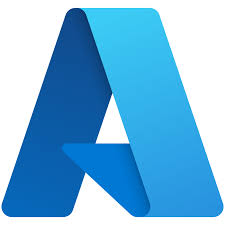

Suraj Gupta
I'm Databricks Certified Data Engineer
About
I am a Databricks Certified Data Engineer with 7+ years of experience designing, building, and optimizing scalable data platforms and pipelines. I specialize in transforming raw data into reliable, high-quality datasets that enable analytics, reporting, and data-driven decision-making.
Databricks Certified Data Engineer.
I am a versatile professional with expertise in Data Engineering, Big Data Technologies, Python, SQL, and Azure Analytics Services to design, build, and maintain scalable data pipelines and workflows. My proficiency in big data technologies, such as Apache Spark, has enabled me to facilitate both real-time and batch data processing, ensuring the seamless flow and transformation of critical information. Complementing this technical prowess, I am also fluent in Python, SQL, and cloud-based platforms like Azure with a deep understanding of ETL processes and the effective utilization of multiprocessing and multithreading techniques.
- Birthday: 22 August 1996
- Phone: +91 98923 62914
- City: Mumbai, Maharashtra, INDIA
- Age: 30
- Degree: BSC-IT
- Email: Guptasurajt98@gmail.com
Tool I used.
-

-

-

-

Skills
Cloud & Data Platforms
Azure Databricks
Azure Data Factory
Synapse Analytics
ADLS
Function App
Big Data & Processing
Spark Streaming
PySpark
Delta Lake
Programming
Python
SQL
C# (ASP.NET)
CSS
Data Engineering
Batch & Streaming Pipelines
ETL/ELT
Databases
SQL Server
Oracle
MongoDB
Tool
Git
SVN
TFS
Jira
ServiceNow
Resume
I am eager to join a prestigious organization that promises not only a stable career trajectory but also job satisfaction and the opportunity to face challenges while making a meaningful contribution to the company's success.
Sumary
Suraj Gupta
Experienced Data Engineer with 7+ years in designing and optimizing large-scale data pipelines using Apache Spark, Python, SQL, and cloud platforms (Azure/AWS), supporting real-time analytics and batch processing at scale.
- Mumbai, Maharashtra, India
- +91 98923 62914
- Guptasurajt98@gmail.com
Education
bachelor's of science in information technology
2015 - 2018
Eknath Madhavi College, Mumbai University
Completed undergraduate program covering software development, databases, networking, and system design, providing a strong foundation in programming, data management, and IT infrastructure.
Certifications
Databricks Certified Data Engineer Associate - Databricks
Feb 2026 - Feb 2028
Databricks Certified Data Engineer Professional - Databricks
Feb 2026 - Feb 2028
Azure Data Engineering - Collabera | Cognixia
Awards
Q4 FY24 DNA RISE Award winner - Infosys
Blind Coding (Winner) Inter College Competition - Pragati College
Professional Experience
Capgemini - senior consultant
April 2025 - Present
Hybrid - Mumbai, Maharashtra
- Migrated large-scale data workflows from AWS to Azure, converting AWS Glue jobs and Step Functions into Azure Synapse Notebooks and Synapse Pipelines.
- Re-engineered ETL processes using PySpark and SQL to ensure performance optimization, scalability, and functional equivalence on Azure.
- Designed and orchestrated end-to-end data pipelines in Azure Synapse Analytics for batch data processing.
- Performed code conversion, refactoring, unit testing, and data validation to ensure accuracy and reliability post-migration.
- Optimized pipeline performance, monitored executions, and resolved production issues during cloud transition.
- Collaborated with client stakeholders and cross-functional teams to deliver seamless AWS-to-Azure migration.
Infosys Pvt Ltd - Technology Analyst
April 2023 - April 2025
Hybrid - Mumbai, Maharashtra
Initially joined via Collabera (contract) and converted to full-time Infosys employee
- Built and maintained scalable ETL pipelines using Azure Data Factory and Azure Databricks, processing large-scale datasets for analytics.
- Developed data processing solutions with Apache Spark (PySpark), Python, and SQL, transforming raw data into curated datasets stored in Delta Lake / Delta Tables.
- Optimized data storage and query performance using Delta Lake features such as Optimization, Z-Ordering, and Vacuum for time-series data.
- Managed and monitored Databricks clusters, including capacity planning, performance tuning, debugging, data validation, and error handling.
- Migrated and ingested data from on-premises SSIS systems to Azure Data Lake, enabling cloud-based analytics.
Collabera Technologies Private Limited - Software Developer
Feb 2022 - April 2023
Remote - Varodra, Vadodara, Gujrat
- Delivered data solutions on Azure Cloud, contributing to enterprise DNA platform for Mercedes-Benz.
- Designed and orchestrated scalable ETL pipelines using Azure Data Factory and Azure Databricks.
- Built and maintained ADF pipelines for data ingestion from multiple file formats using Copy Activity and Data Flows.
- Ensured data quality by troubleshooting data inconsistencies and resolving cross-source discrepancies.
- Monitored pipeline executions, handled failures, and optimized performance for reliable data processing.
Osource Global Private Limited - Software Developer
March 2020 - Dec 2021
Hybrid - Mumbai, Maharashtra
- Developed and maintained enterprise web applications using ASP.NET MVC, C#, and .NET Framework for products including ONEXPay and Payroll Information Portal.
- Delivered high-quality front-end and back-end solutions using JavaScript, HTML, and CSS, ensuring performance and client satisfaction.
- Diagnosed and resolved application defects, implemented enhancements, and improved system stability and functionality.
- Collaborated with cross-functional teams and clients to translate business requirements into technical solutions.
- Designed and generated business reports using Crystal Reports and RDLC (monthly, yearly, tax reports)
- Utilized SVN and Team Foundation Server (TFS) for version control, code management, and release support.
APPETERIA TECHNOLOGIES PVT LTD - Jr. Asp .Net Developer
March 2019 - Feb 2020
Dombivli, Maharashtra
- Designed and developed user-friendly websites, including optimized checkout flows that improved user engagement and conversions.
- Built responsive UI using ASP.NET, C#, JavaScript, HTML, and CSS.
- Enhanced application performance through backend optimization using ASP.NET, C#.NET, and T-SQL.
- Developed database objects including Stored Procedures, Views, Functions, and Complex Joins for efficient data access.
- Implemented e-commerce functionality with integrations to PayPal Payment APIs and Google Maps API.
My latest work
Welcome to my data engineering portfolio, showcasing my work in architecting end-to-end data platforms, implementing scalable ETL/ELT pipelines, and enabling data-driven decision-making.
AWS to Azure Data Platform Migration
Migrated enterprise data pipelines from AWS Glue and Step Functions to Azure Synapse Analytics using Synapse Notebooks and Pipelines.
Big Data Processing & Analytics Platform
Developed distributed data processing solutions using Apache Spark (PySpark) for transforming raw data into analytics-ready datasets.
Contact
Address
Mumbai, Maharashtra, India
Call Us
+91 98923 62914
Email Us
Guptasurajt98@gmail.com